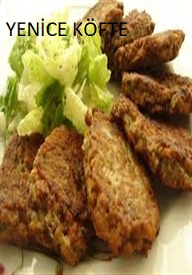
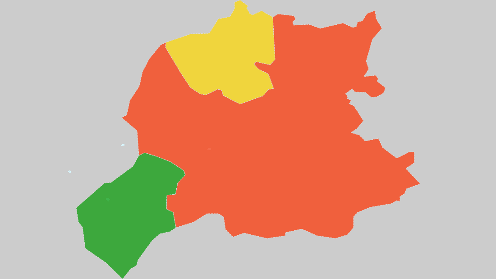

BAYBURT
BAYBURT HAKKINDAMevcut kaynaklara göre Bayburt Şehrinin tarihi M.Ö. 3000’ li yıllara kadar uzanmaktadır.Şehir Azziler tarafından kurulmuştur. Bayburt M.Ö. 770-665 yılları arasında Kimmer ve İskitlerin akınlarına uğramıştır. Daha sonra bölgeye Haldiler hakim olmuştur. Kısa bir süre Med’lerin eline geçen bölge daha sonra Pers hakimiyetine girmiştir. Şehir Azziler tarafından kurulmuştur. Bayburt M.Ö. 770-665 yılları arasında Kimmer ve İskitlerin akınlarına uğramıştır. Daha sonra bölgeye Haldiler hakim olmuştur. Kısa bir süre Med’lerin eline geçen bölge daha sonra Pers hakimiyetine girmiştir. Xenophan, Anabasis adlı eserinde Bayburt’tan büyük, kalabalık ve zengin bir şehir olarak bahsetmektedir. O zamanki adı Gymnias olan Bayburt bir İskit şehridir. İskitler bizim saka olarak tanımladığımız Türklerdir. Bayburt yaklaşık olarak 5000 yıllık bir Türk şehridir. M.Ö.2 Y.Y. dan itibaren Pontus krallığına bağlı olan Bayburt M.Ö. 40’lı yıllarda Roma hakimiyetine girmiştir. Urartular tarafından yapılan Bayburt Kalesi Roma İmparatoru Justinianus döneminde onarım görmüştür. M.S. 705 yılında Emevilerin eline geçen Bayburt 715 yılında Bizanslılar tarafından geri alınmıştır. 850 yılından sonra Türklerle Bizanslılar arasında sürekli savaşlara sahne olan Bayburt, artık Müslüman Türklerin yerleşmeye başladıkları bir yer olmuştur.1048 yılına gelindiğinde bölge artık yoğun Türk nüfusuyla meskundur. 1054 yılında Bayburt Selçuklular tarafından fethedilmiştir. 1081 yılında Bayburt Selçuklu Devletine bağlı olan Saltuk oğullarının ve ardından Mengücek oğullarının egemenliğine girmiştir. Daha sonra Danişmentlilerin , ondan sonra da Bizanslıların eline geçen Bayburt’u Trabzon Valisi Teodor Gabras geri alarak kendi egemenliğini ilan etmiştir. Bayburt Moğol istilasıyla büyük bir yıkıma uğramıştır. 60.000 kadar Türkmen kitlesinin yerleştiği Bayburt Bölgesinden , 1000 kadar Türkmen bölgeye zarar veriyor gerekçesiyle Denizli taraflarına gönderilmişlerdir. Anadolu Selçuklu Sultanı Süleyman Şah’ ın kardeşi Mugusiddin Tuğrul Şah 1200 – 1230 yılları arasında Bayburt kalesini yeniden yaptırırcasına tahkim ettirmiştir. Bayburt Kalesine Çin-ü Maçün kalesi de denilmektedir. Bunun sebebi kalenin Batı ve Güney dış yüzeylerinde tezyinat olarak mor firüze çinilerin kullanılmış olmasıdır. Bayburt 14. Y.Y. da Akkoyunlu Devletinin kuruluş ve tarih sahnesine çıkış yeri olmuştur. Akkoyunlu İdaresi 17 Ekim 1514’ te Yavuz Sultan Selim’ in veziri Bıyıklı Mehmet paşa’nın Bayburt’ un fethiyle görevlendirilmesine ve fethin gerçekleşmesine kadar sürmüştür. Fetihten sonra Osmanlılarca Sancak Merkezi yapılmış Erzurum, Tekman ve İspir Bayburt’a bağlanmıştır.Bayburt’ ziyaret eden Evliya Çelebi Fatih’in 3000 Tireliyi Bayburt’ta iskana mecbur ettiğini yazmaktadır. 1828 yılında Ruslarca işgal edilen Bayburt Serasker Osman Paşanın topladığı kuvvetlerle Rusları Aydıntepe’ de büyük bir bozguna uğratmıştır. Ancak daha sonra takviye kuvvetlerle geri dönen Ruslar , Serasker Osman Paşayı Kelkite kadar geri çekilmek zorunda bırakmışlardır. Ruslar Aydıntepe’ de yenilmenin etkisiyle Bayburt’u yakıp yıkmışlardır. Fransız gezgin Texie Rusların bu tahribatını anlatmaktadır. Bu işgalin acısı Bayburt’lu Zihni’ nin ünlü koşmasında dile getirilmektedir. Rus işgali Ekim 1829 yılına kadar devam etmiştir. Kale içindeki mahalle bir daha onarılamayacak ve içinde yaşanamayacak şekilde tahrip edilmiştir. 1. dünya savaşında Rus kuvvetleri 2 Mart 1916 tarihinde Kop’ a varmışlar, burada Türk Askeri ve Bayburt halkı büyük bir direnme göstermiş ve bu savunma tarihe “2.Plevne Savunması” olarak geçmiştir. 16 Temmuz 1916 da Bayburt’a giren Rus Kuvvetleri ve onların işbirlikçisi Ermeniler halka pek çok zulüm yapmışlardır. Ermeniler 1918 yılının Şubat ayında yüzlerce Bayburtluyu Taş mağazalara doldurmuşlar ve diri , diri yakmışlardır. Bayburt bu işgalden 21 Şubat 1918 tarihinde kurtulmuştur. Bu işgal esnasında muhacir olarak Anadolu’nun iç kesimlerine giden Bayburtlular kurtuluşla birlikte yurtlarına geri dönmüşlerdir. Çorumdan dönenler Çorumda gördükleri Saat Kulesinin bir örneğini de Bayburt’ta yaparak Türkiye Cumhuriyetinin 1. kuruluş yıl dönümü olan 29 Ekim 1924 yılında hizmete sokmuşlardır. 1927’ ye kadar Erzurum’ a bağlı olan Bayburt bu tarihte Gümüşhane’ye bağlandı. 21.06.1989 tarihinden itibaren 3578 sayılı yasa ile il statüsüne kavuştu. BAYBURT ADININ KAYNAĞI Şehrin bu gün bilinen isminin Ortaçağ Ermeni kaynaklarında; Payberd, Bizans kaynaklarında ; Payper , Baberd, Paypert. XII. Yüzyıl sonlarında bu bölgeden geçen Marko Polo’ nun seyahâtname’ sinde ; Painpurth, Baiburt. Arap kaynaklarında ; Bâbirt, II. Mesud adına 1291’ de basılan bir parada Baypırt. Akkoyunlu tarihinden bahseden çağdaş eserlerde Pâpirt şeklinde geçen kelimenin son hecesi Berd’ in “yüksek kale” anlamına geldiği bilinmekteyse de ilk hecesine bir mana verilememektedir. 1647 yılında şehri ziyaret eden Evliya Çelebi Bayburt adının zengin manasına gelen “Bay” belde manasına gelen “yurt” gibi iki kelime ile izah eder. Osmanlı dönemine ait kaynaklar ise ismi bu günkü söylenişine uygun olarak Bayburt şeklinde kaydederler. |
TARİHİ YERLER |
YEMEKLER

|
BAYBURT HARİTASI |